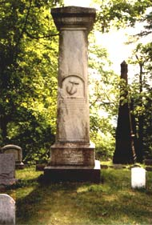
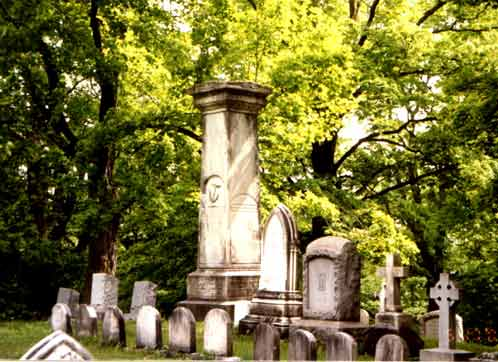

|
 On a bluff overlooking the Hudson River at the Albany Rural Cemetery is a monument to Afro Albanian patriarch Captain Samuel Schuyler. This granite icon is instantly recognizable by a ship's anchor carved into its east and west faces. It is located in section 66 and is situated on one of the most commanding vistas at the cemetery. The Samuel Schuyler monument literally towers over the tombstones of a number of notables including New York Governor William L. Marcy and renowned Albany painter Ezra Ames. The monument celebrates the marriage of Samuel and Mary Schuyler and the lives of three of their most prominent sons. It probably was erected sometime after the death of Thomas Schuyler in 1866. It is the centerpiece of a larger family plot that includes more than a dozen individual stones. This beautiful Schuyler family plot also is a cornerstone of a grassroots effort to restore the family to its place of importance in Albany history. That initiative led to the commissioning of historical artist Len Tantillo to produce a painting of a Schuyler towboat set against the backdrop of Schuyler's south Albany neighborhood. The Albany Rural Cemetery was opened
in 1844. It was one of the first major embodiments of the rural
cemetery movement in the United States. Graves were relocated there
from cemeteries and plots throughout Albany beginning in 1845. The
first local history of the cemetery appeared in the Bicentennial
History of Albany, pp. 674-76. Subsequent references can
be found in the Wikipedia
entry and on the cemetery's official
website. All of these have been superseded by publication of
Paul Grondahl's These Exalted Acres: Unlocking the Secrets of
Albany Rural Cemetery in 2013.
It is widely available for purchase in printed form and also appears
on its own website courtesy of the Times Union.
Photographs taken by Stefan Bielinski on a sunny day in May 2001.
first posted 6/12/01; last updated 7/4/16 |